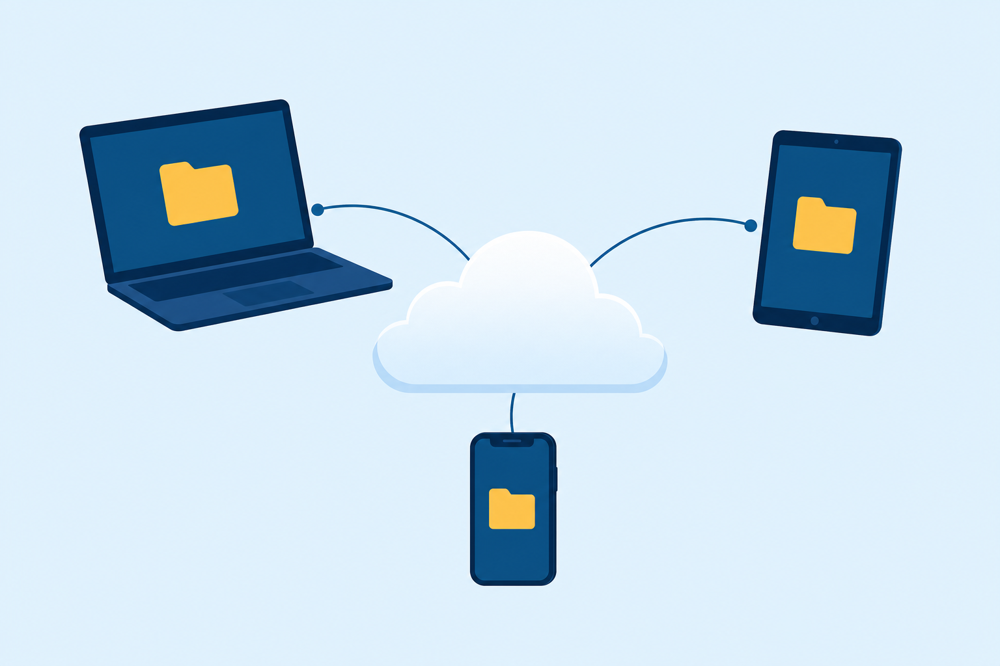

01
Run
the Linux command line: files, users, and permissions.
Linux commands, macOS features, and the support day at TechEd Academy that needs both.
Start here: Which have you touched before, a Linux terminal or a Mac? What did you reach for first?
the Linux command line: files, users, and permissions.
packages, processes, and the network from the shell.
the Mac: settings, apps, updates, and backups.
The Linux lab. tj’s lessons folder needs work.
A faculty Mac. Same jobs, different tools.
One backup on each platform. Everyone sleeps.
tj@TJ-VM:~$ CTRL+ALT+Fxjumps between consoles
What runs.
Modifies the command.
The value it operates on.
command | command
The pipe hands one command’s output to the next as input.
command ; command
The semicolon strings commands together, run in order.
Everything is a directory under the root.
tj@TJ-VM:~$ pwd # where am I? tj@TJ-VM:~$ cd Documents/lessons tj@TJ-VM:~/Documents/lessons$ ls
* matches anything\ escapesquotes hold a phraseWith a partner: Pick the command for each clue, plus the option or metacharacter that closes the gap.
* wildcard standing in for the half you forgot. grep searches for strings inside files. And -i tells grep to ignore case entirely.sudo commanduseradd · usermod · userdel
groupadd · groupmod · groupdel
With a partner: Work the three sums. Then name the command that applies the result, and the one that changes the owner.
Repositories (repos) · where updates are retrieved from
apt update apt upgrade apt install # add a package
dnf check-update dnf update · dnf upgrade dnf install # or dnf remove
ps -e # the whole process table top # live statuses
Watch first. Then change what runs.
⌘ COMMAND+SPACE
Same shape as the morning’s tree. New branch names.

Apps plus OS updates. Apple ID required.
A disk image, like a Windows .iso.
A package file.
Drag the app there to uninstall.
The morning ran apt install. The afternoon opens the App Store.
find and grep hunted the morning’s filesapt install added the morning’s packagefsck checked and repaired the diskWith a partner: Name the macOS feature that does each job on the afternoon’s Mac.
crontab holds the list of scheduled jobs.
Five time fields, then the job itself.
Morning’s lessons folder, evening’s insurance, on both machines.
rwx r-x r-x: give the octal number, and the command that sets it.
A fresh package on Debian, then on Red Hat: name both commands.
Time Machine’s three rules: which drive, which format, what happens when it fills.
Next step: Run the CertMaster labs: File Management, Manage Linux File Ownership, and Configure Linux. Chapter 18 locks down the SOHO network.